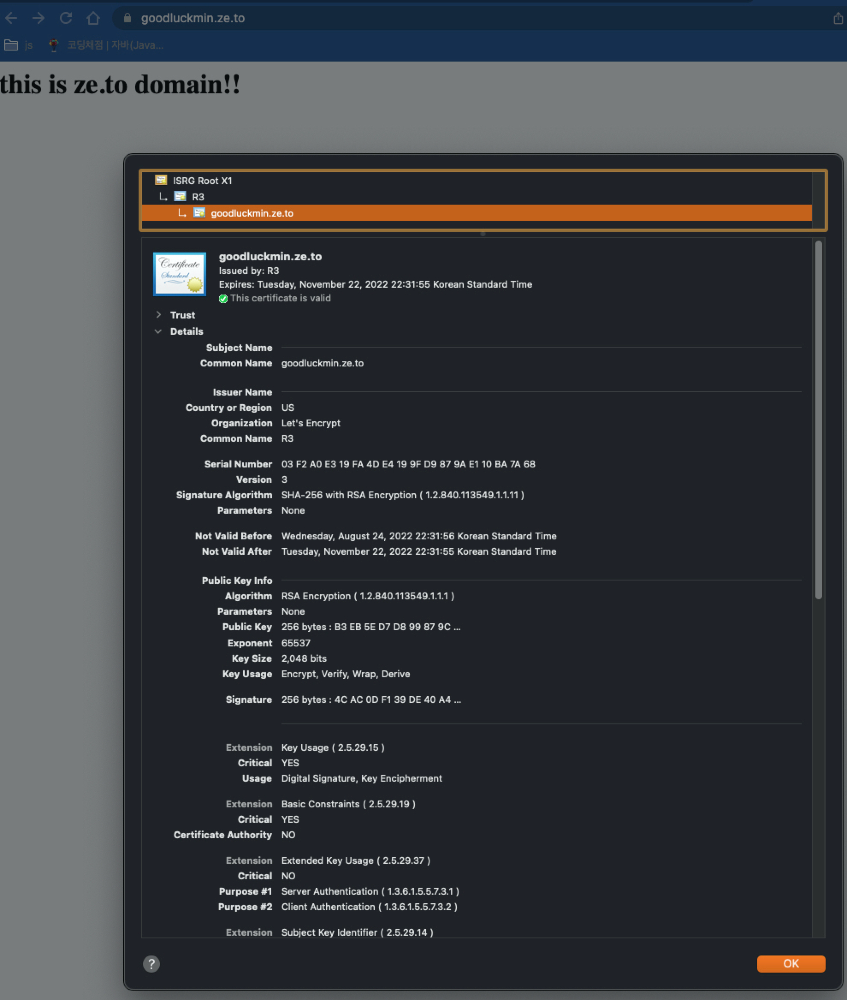

Apache에 SSL 모듈 설치 / 환경설정
mod_ssl이란?
openssl을 이용하여 SSL이나 TLS 프로토콜 암호화를 해주는 Apache 모듈이다.
그러면 openssl은 무엇일까?
컴퓨터 네트워 상의 보안 통신을 위한 암호화 라이브러리이다.
암호화 보안 프로토콜인 TLS나 SSL 프로토콜 구현을 제공하고 있다.
Apache에 SSL 모듈 설치
먼저 openssl이 있는지 확인한다.
openssl version
위 명령어를 실행하고 OpenSSL 1.0.2k-fips 26 Jan 2017 이 설치되어있는 걸 확인했다.
이제 mod_ssl을 설치해준다.
sudo yum install mod_ssl
설치를 완료하고 모듈이 정상적으로 설치 되었는지 확인해본다.
ll /usr/lib64/httpd/modules | grep ssl
위 명령어를 통해 검색 결과로 mod_ssl.so가 나오면 정상적으로 설치가 된 것이다.
가상 호스트에 SLL 인증서 설정
가상호스트에 SSL 인증서를 설정하려면 개인키와 인증서에 대한 설정이 필요하다.
Let’s Encrypt로 SSL 인증서 발급
lets encrypt는 ACME 프로토콜을 사용하여 도메인명의 유효성을 확인하고 인증서를 발급한다.
따라서, ACME 클라이언트 소프트웨어를 하나 설치해야한다.
그중에서 certbot 사용이 가장 권장되어진다.
sudo yum install certbot python2-certbot-apache
위 명령어로 아파치용 certbot을 설치한다.
이제 certbot을 통해서 인증서를 발급해본다.
인증서 발급에는 다양한 옵션들이 있다.
- standalone
- 80 or 443 포트를 사용할 수 있어야한다.
- 도메인이 서버에 연결되어 있어야한다.
- 절차는 간소하나 웹서버를 중지 시키고 설치해야한다.
- webroot
- 웹서버 중단없이 발급한다.
- 웹서버에 미리 설정을 해야한다.
- manual
- 수동으로 지침에 따라 인증서를 가져와 도메인 검증을 직접 수행한다.
- 자동 새로 만들기를 지원하지 않는다.
- apache
- Apache를 사용하여 인증서 획득 및 설치를 자동화한다.
- nginx
- Nginx로 인증서 획득 및 설치를 자동화한다.
인증서 발급 옵션 1 : Webroot
certbot의 webroot 옵션으로 인증서를 발급 받는다.
sudo certbot --webroot -w /var/www/html/goodluckmin.ze.to -d goodluckmin.ze.to certonly
-w 옵션 뒤에는 루트 디렉터리 경로를 지정해준다.
-d 뒤에는 인증서를 발급 받고자하는 도메인을 지정해준다.
certonly 옵션은 certbot이 웹서버 구성파일을 직접 수정하지 못하도록 한다.
인증서 발급 옵션 2 : standalone
먼저 웹서버를 중지시킨다.
sudo systemctl stop httpd
certbot standalone 옵션으로 인증서를 발급 받는다.
sudo certbot --standalone -d goodluckmin.ze.to certonly
인증서를 발급 받고자하는 도메인을 -d 옵션 뒤에 설정한다.
certonly 옵션은 certbot이 웹서버 구성파일을 직접 수정하지 못하도록 한다.
IMPORTANT NOTES:
- Congratulations! Your certificate and chain have been saved at:
/etc/letsencrypt/live/goodluckmin.ze.to/fullchain.pem
Your key file has been saved at:
/etc/letsencrypt/live/goodluckmin.ze.to/privkey.pem
Your certificate will expire on 2022-11-21. To obtain a new or
tweaked version of this certificate in the future, simply run
certbot again. To non-interactively renew *all* of your
certificates, run "certbot renew"
- If you like Certbot, please consider supporting our work by:
Donating to ISRG / Let's Encrypt: https://letsencrypt.org/donate
Donating to EFF: https://eff.org/donate-le
이메일을 입력하고 정보에 동의하면 위와 같은 설치 성공 문구가 나온다.
인증서와 인증키가 저장된 경로가 나오고
인증서 만료일도 나온다.
certbot renew라는 명령어를 통해서 모든 인증서를 갱신할 수 있다라는 문구도 적혀있다.
생성한 인증서를 Apache 웹서버에 설정
443 포트에 대한 인증서 설정은 ssl.conf 파일내에서 설정한다.
sudo vi /etc/httpd/conf.d/ssl.conf
<VirtualHost _default_:443>
...
DocumentRoot "/var/www/html/goodluckmin.ze.to"
ServerName www.goodluckmin.ze.to:443
SSLCertificateFile /etc/letsencrypt/live/goodluckmin.ze.to/cert.pem
SSLCertificateKeyFile /etc/letsencrypt/live/goodluckmin.ze.to/privkey.pem
SSLCertificateChainFile /etc/letsencrypt/live/goodluckmin.ze.to/chain.pem
SSLCACertificateFile /etc/letsencrypt/live/goodluckmin.ze.to/fullchain.pem
</VirtualHost>
새로 발급받은 키와 인증서들을 VirtualHost default:443 밑에 정의해준다.
기존에 존재하는 설정은 주석처리를 해주었다.
그리고 http프로토콜로 들어오는 경우에 https로 리다이렉트를 시키기위해 vhosts.conf 파일에 설정을 추가해준다
<VirtualHost *:80>
...
RewriteEngine on
RewriteCond %{HTTPS} off
RewriteRule (.*) https://%{HTTP_HOST}%{REQUEST_URI} [R=301,L]
</VirtualHost>
추가된 설정을 설명하자면,
ReqwirteEngine on
리다이렉트 활성화 여부를 설정한다.
RewriteCond %{HTTPS} off
RewriteRule과 함께 사용되는 규칙이다.
RewriteCond에서 설정한 패턴에 일치하면 RewrtieRule을 실행한다.
https가 off인 경우 즉, http로 들어오는 요청인경우를 말한다.
RewriteRule (.*) https://%{HTTP_HOST}%{REQUEST_URI} [R=301,L]
RewriteRule [input URL] [return URL] 형식으로 작성한다
() → 괄호 안의 문자/문자열을 그룹으로 묶는다.
. → 다수의 한문자
- → 0개 이상의 문자 또는 문자열
즉, http로 들어오는 모든 문자열을 뒤에 return URL로 보내준다라는 뜻이다.
R → 리다이렉트, return URL로 넘긴다라는 옵션
L → 뒤구문 여부를 무시하고 이 줄에서 끝낸다라는 옵션
standalone 옵셥으로 진행 한 경우에는 설정을 마치면 다시 웹서버를 가동 시켜준다.
sudo systemctl start httpd
그리고 설정한 도메인으로 접속을 해본다.

발급 받은 인증서를 확인할 수 있다.